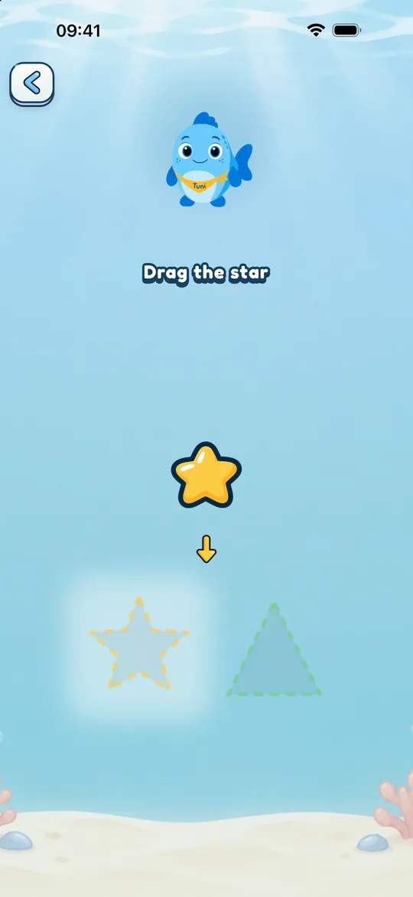
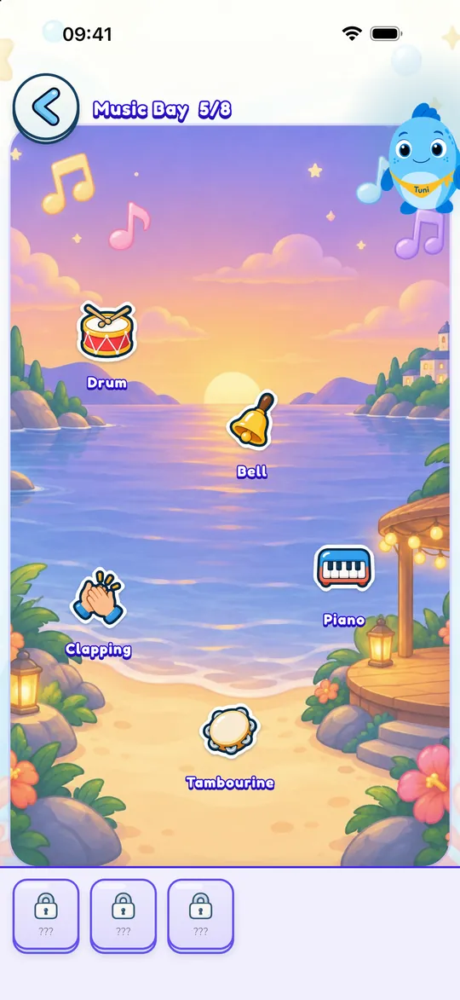
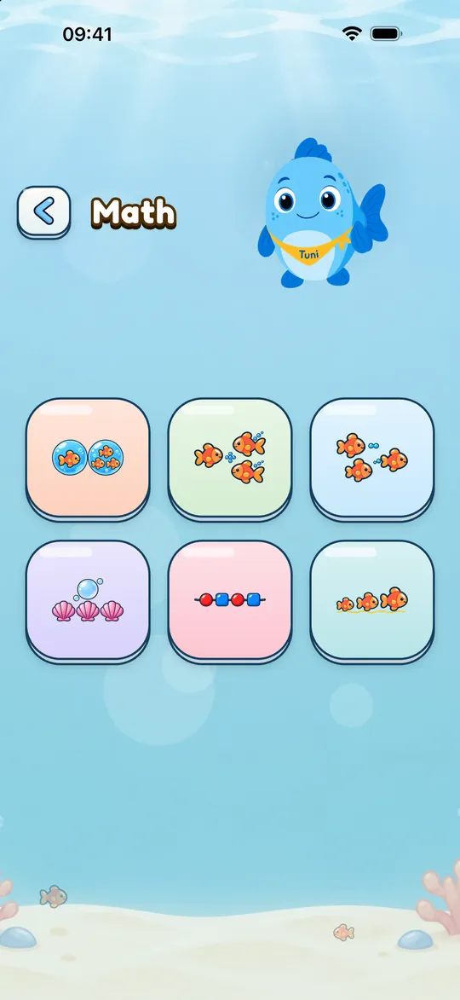

For families
What’s inside Mundo Tuni
What your child does while playing, what you can adjust, and what happens to their data.
A visit to Mundo Tuni
The home menu groups the worlds. Your child picks one and sees a grid of its items: numbers, letters, colors… Tap one and Tuni introduces it, then a series of short games begins.
When they finish, they earn a star (and, in the six main worlds, a sticker) and go back to the grid with their new star in view.

At their own pace, no pressure
Mundo Tuni has no streaks, no countdowns and no pop-ups that interrupt play. Tuni encourages and explains, but never rushes.
Difficulty follows the age group you choose: Toddlers (age 2), Preschoolers (3) or Big kids (4 to 6).

Play time with a calm ending
There’s no limit by default. If you turn it on in the grown-up area (5, 10 or 15 minutes of active play), Tuni ends the game when time is up, says goodbye and suggests an idea to keep going without a screen.
If you want them to keep playing a little longer, a grown-up can allow it.

Our stance on screens
Many kids’ apps are built to make it hard to stop: autoplay, frequent rewards, ads. The American Academy of Pediatrics says so in its 2026 policy and adds that much of it is outside a family’s control. Mundo Tuni was made the other way round: no ads, works offline, no streaks or countdowns, a play time you can set and a calm ending.
What the guidelines recommend: the World Health Organization advises no more than one hour of sedentary screen time a day for ages 2 to 4, and less is better; Spain’s pediatric association goes further and recommends avoiding screens until age 6. We report both as they are. For families who do use screens, the guidelines advise watching together, choosing calm content and not using a screen to soothe a tantrum.
Mundo Tuni doesn’t replace playing, reading or talking with you. It simply tries not to get in the way.
English, Spanish and Catalan
Choose the game language when you start or change it at any time. Spanish has voices from Spain and Latin America.
In Lola’s corner, kids playing in English learn 24 words in Latin American Spanish; kids playing in Spanish or Catalan learn them in American English. You can hide this corner.

Math for big kids
Ages 4 to 6 get a math world with six games: compare quantities, add and subtract with objects, count backward, continue patterns and order by size or length.
It works with quantities up to 10. It’s not a course in written arithmetic.

The grown-up area
To get in, you solve a math challenge meant for grown-ups; it changes with the age group. Inside you’ll find their progress and the settings.
- Progress by world and by concept, with no comparisons
- Play time, language and age group
- Tuni’s subtitles and colorblind support
- Restore Purchases

Their privacy
Mundo Tuni doesn’t ask for your child’s name, date of birth or an account for them. Progress is saved on your device and isn’t sent anywhere.
Purchases are handled by RevenueCat with a pseudonymous technical identifier, without your name or email. If a grown-up turns on the microphone to repeat words with Lola, the voice is recorded briefly on the device, played back and deleted. If the app closes halfway, it’s deleted the next time the app opens. It’s never sent.


Try it free
Download it for your child and try the free content in every world together. If you like it, the rest unlocks with a one-time purchase.